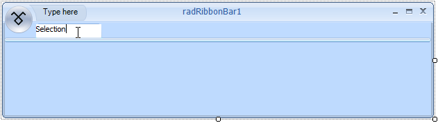
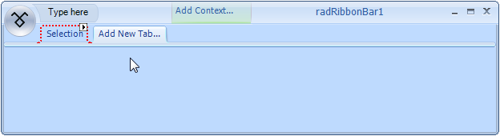
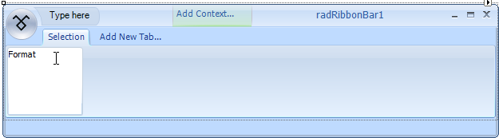
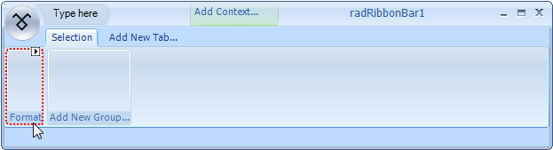
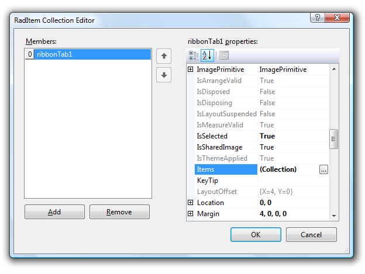

Adding and Removing Tabs and RibbonBar Groups
Adding and Removing Tabs and RibbonBar groups
When you are designing a new __T__elerik RadRibbonBar, one of your first tasks will be adding tabs and RibbonBar groups to the control.
Tabs and RibbonBar groups will logically organize the functionality of your application.
To Add Tabs to a Telerik RadRibbonBar
To add a new tab to a T__elerik RadRibbonBar, drag a __RadRibbonBar control
to a form in Visual Studio, and then click Add New Tab:

This action will open a text box editor where you can type the name for your new tab:
After typing the text, press 'Enter' to confirm the creation of the tab:
You can also add tabs to the RadRibbonBar by selecting Add Tab
from the RadRibbonBar control's Smart Tag menu:
Display the Smart Tag menu by clicking the Smart Tag menu button located in the upper right corner of the RadRibbonBar.
On the Smart Tag menu, click Add Tab.

3. Once you have added the tab, select the tab and set its Text property to the desired name for the tab.
To Remove a Tab from a Telerik RadRibbonBar
To remove a tab from a RadRibbonBar: Right-click on the tab, and then click Delete.
To Add a RibbonBar group to a Tab
To add a new RibbonBar group to a tab, follow these steps:
1. Select a tab on the RadRibbonBar control.
2. Click anywhere in the box labeled 'Add New Group...' and type the name of the group__:__
3. This action will create a new RibbonBar group with the desired name, add it to the group collection of the tab and outline it:
You can also add RibbonBar groups to a tab using the collection editor:
1. On your form, select the RadRibbonBar.
2. In the Properties window, select the ribbon bar's CommandTabs property and click the ellipsis
button to open RadRibbonBarCommandTab Collection Editor.
3. In the Members box of the RadRibbonBarCommandTab Collection Editor, select the RadRibbonBarCommandTab
item that is associated with the tab to which you want to add the RibbonBar group. The image below shows the RadRibbonBarCommandTab
item for tabItem2 is selected.

4. Select the Items property of the RadRibbonBarCommandTab__,__ and then click the ellipsis button to open the RadItem Collection Editor:

5. In the RadItem Collection Editor, click Add to add a RibbonBar group to the tab. After clicking the
Add button, a new RadRibbonBarGroup appears in the Members box, as shown below:

6. Set the Text property to the desired name for the RibbonBar group. The image above shows the Text property set to RibbonBar group 1.
7. Click OK to exit from the RadItem Collection Editor,
and then click OK to exit the RadRibbonBarCommandTab Collection Editor The
image below shows the new RibbonBar group (with the caption, RibbonBar group 1) added to the Second Tab tab.